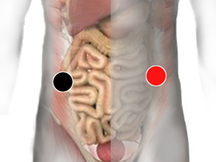

Herpes 1
Par
c. ascendente* - c. descendente
intestino delgado - i. grueso
apéndice - contraciego

Puede responder como Duodeno...
Generalidades:
Virus ARN. Síntomas conocidos como "Faja de la reina". Ulceraciones en espacios intercostales. Dolor debajo de la costilla. Herpes genitales.
Los síntomas pueden durar de 3 a 5 semanas.
También conocido como Herpes Zoster es una reactivación del virus de varicela zoster. Al igual que otros tipos de herpes, el herpes 1 permanece inactivo en el sistema nervioso en muchos humanos. Sólo hay un tipo de este virus y el humano es su único hospedador. El estrés o un sistema inmune deprimido pueden activar a este virus apareciendo los síntomas.
Transmisión
La forma de contagio es similar a la de la varicela . Una persona que lo contraiga primero podría desarrollar los síntomas de la varicela.